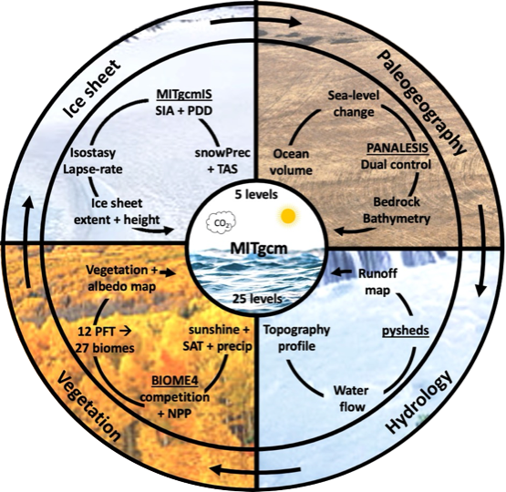
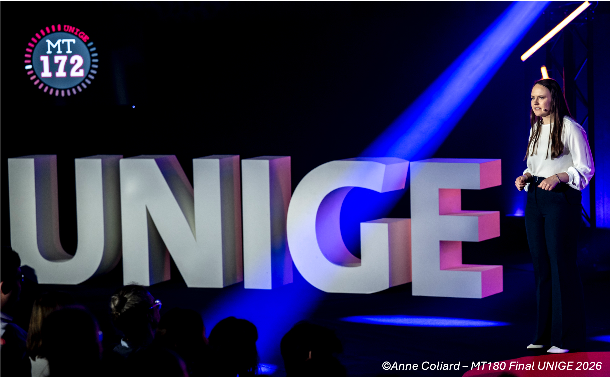
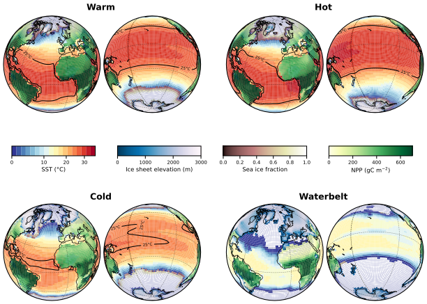
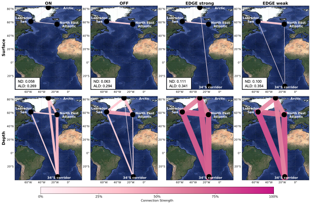

01 BIG-MITgcm

Developed and led the development of a coupled climate-modeling framework representing the atmosphere, ocean, sea ice, vegetation, and ice sheets.
I study how nonlinear interactions within the Earth system generate multiple climate states, and how feedbacks, stability and dynamical processes govern transitions between them.

My research focuses on how nonlinear interactions within the Earth system give rise to multiple climate states and tipping behavior. I combine coupled climate modeling, nonlinear dynamics, and paleoclimate data to investigate the emergence and stability of equilibrium states, their transitions, and their consistency with paleoclimate evidence. I also use climate network approaches to characterize the spatial signatures of climate states and identify potential early warning signals of approaching transitions.

Developed and led the development of a coupled climate-modeling framework representing the atmosphere, ocean, sea ice, vegetation, and ice sheets.

Characterising multiple climate states, from Snowball to Hothouse Earth, and investigating their role in Earth’s climate evolution over the last million years and into the future.

Developing network-based methods to characterize transitions between climate states and identify spatial signatures and potential early warning signals.
My work combines physical climate modeling with nonlinear dynamical systems approaches. A central part of my research has been the development of BIG-MITgcm, a coupled framework designed to explore equilibrium climate states and long-timescale Earth-system feedbacks. Alongside model development, I investigate the mechanisms controlling the stability and transitions of different climate states.
I aim to understand how the stability of an Earth-system state influences its response to external forcing, and how state-dependent climate sensitivity can be quantified across different climate regimes. This provides a framework for connecting equilibrium-state dynamics, feedback processes, and the changing sensitivity of the Earth system.
This work characterizes the spatial signature of the AMOC edge state, also known as the Melancholia state, which lies on the boundary separating the ON and OFF states of the circulation. Using climate networks, we identify enhanced teleconnections between the northern and southern Atlantic and increased network connectivity associated with the edge state.
The results provide a potential framework for identifying this unstable state in climate models and, potentially, observations, contributing to the development of approaches for detecting approaching AMOC transitions.
Read the publication
Physical Review Research 8, 033268 (2026).
DOI →Geoscientific Model Development 19, 4357–4384 (2026).
DOI →Scientific Reports 16, 8797 (2026).
DOI →Chaos: An Interdisciplinary Journal of Nonlinear Science 34, 123161 (2024).
DOI →CHF 30,000 · University of Geneva
€1,400 · COST Association
€2,300 · European Geosciences Union
CHF 1,000 · Swiss Academy of Sciences
I enjoy teaching across physics, climate science and mathematics, with an emphasis on making complex concepts intuitive and engaging.
Exercises, active-learning activities and assessment.
Guest lectures in English on oceanography and climate tipping elements.
Teaching and exercise sessions in French.
Teaching in French.
Mathematics, physics and chemistry teaching in English and French.
I engage with broader audiences through scientific communication, public outreach and educational activities.
Communication about BIG-MITgcm on the MITgcm blog under This Month’s Featured Publication.
Worked with students from the HEAD (Haute École d’Art et de Design) school to produce an illustration supporting a scientific publication.
Participated in this competition to communicate my PhD research to a wider public in three minutes, qualifying for the Geneva final.
Invited talk presenting research from the Applied Physics department to high school students visiting the university and considering pursuing studies in physics.
Promoted science and presented research conducted in the laboratory to a broader public in the city of Geneva.
I am always happy to discuss research, collaborations, teaching, nonlinear climate dynamics and Earth-system science.